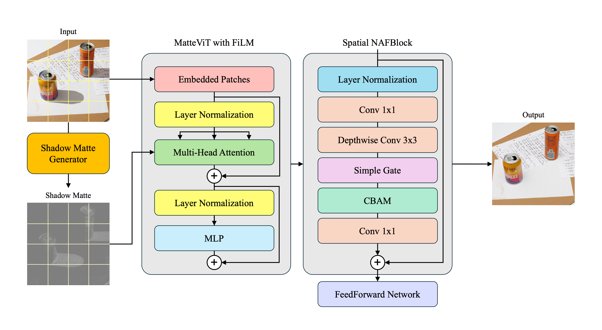

|
Chaewon Kim |
|
Hi! I’m an undergraduate at Kookmin University (Seoul, South Korea), majoring in AI, Big Data & Management with a minor in Computer Science. This past summer, I was a research intern at UC Irvine, working on video action recognition and vision–language models. At KMU, I’ve been developing methods that make visual perception more stable and trustworthy in the wild. So far, my work has focused on:
|
Publications and Manuscripts |

|
Refining Visual Artifacts in Diffusion Models via Explainable AI-based Flaw Activation Maps
Seoyeon Lee*, Gwangyeol Yu*, Chaewon Kim*, Jonghyuk Park [Under review] (* Equal contribution) Paper Code Soon |

|
MatteViT: High-Frequency-Aware Document Shadow Removal With Shadow Matte Guidance
Chaewon Kim*, Seoyeon Lee*, Jonghyuk Park [Under review] (* Equal contribution) Paper Code |
|

|
NTIRE 2025 Image Shadow Removal Challenge Report
Tim Seizinger et al. In Proceedings of the IEEE/CVF Conference on Computer Vision and Pattern Recognition Workshops (CVPRW), 2025 Paper Code |
Honors and Awards
|
Teaching
|
Service
|
|
Thank you for reading! |